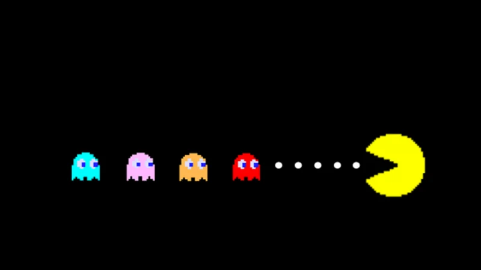

PERIODO DIGITALE - L’EVOLUZIONE DEI PIXEL
PAC-MAN
Prima del 1980, i videogiochi erano quasi tutti a tema spaziale o bellico (Space Invaders, Asteroids). Poi arrivò una pallina gialla affamata e tutto cambiò. Pac-Man non era solo un gioco: era un fenomeno sociale che riuscì a portare nelle sale giochi un pubblico vastissimo, incluse per la prima volta moltissime donne e famiglie.
UNA PIZZA SENZA UNA FETTA
La leggenda narra che l'idea per la forma di Pac-Man venne a Iwatani mentre stava mangiando una pizza: guardando il disco a cui mancava uno spicchio, vide la bocca di un personaggio.
- Il Gamplay:Niente pistole o laser. Pac-Man deve mangiare tutti i puntini in un labirinto evitando quattro fantasmi colorati: Blinky, Pinky, Inky e Clyde.
- La Riscossa:Grazie alle "Power Pellets" (i puntini più grandi), i ruoli si invertono: Pac-Man diventa temporaneamente invulnerabile e può dare la caccia ai suoi inseguitori. È stato uno dei primi esempi di "power-up" nella storia dei giochi.


L'INTELLIGENZA DEI FANTASMI
Pac-Man è stato rivoluzionario anche dal punto di vista tecnico. Ogni fantasma aveva una propria "personalità" programmata:
- Blinky (Rosso):L'inseguitore diretto, che punta sempre alla posizione di Pac-Man.
- Pinky (Rosa):Cerca di precedere Pac-Man per tendergli un'imboscata.
- Inky (Azzurro):Il più imprevedibile, il suo movimento dipende dalla posizione di Blinky.
- Clyde (Arancione):Il "timido", che si allontana se si avvicina troppo al protagonista.

PAC-MAN MANIA
Il successo fu così travolgente da generare cartoni animati, canzoni in classifica e una quantità infinita di merchandising. Pac-Man è diventato il simbolo della "Golden Age" delle sale giochi, dimostrando che il segreto di un grande videogioco risiede nel design dei personaggi e nel divertimento puro, più che nella potenza grafica.
